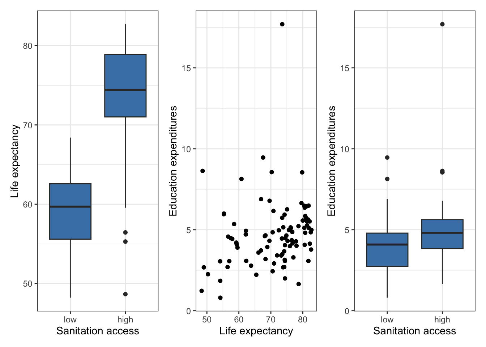

legos <- read_csv("data/lego-sample.csv")|>
drop_na(Pieces, Amazon_Price, Size, Minifigures)HW 02: Multiple linear regression
Due date
This assignment is due on Thursday, October 3 at 11:59pm.
Introduction
You will use multiple linear regression to analyze the relationship between three or more variables for multiple data sets. You will conduct statistical inference to draw conclusions about these relationships.
Learning goals
In this assignment, you will…
- use multiple linear regression to model the relationship between three or more variables.
- draw conclusions from the model using statistical inference.
- fit and interpret models with interaction terms.
Getting started
Go to the sta221-fa24 organization on GitHub. Click on the repo with the prefix hw-02. It contains the starter documents you need to complete the lab.
Clone the repo and start a new project in RStudio. See the Lab 01 instructions for details on cloning a repo and starting a new project in R.
Packages
The following packages are used in this assignment:
Conceptual exercises
Instructions
The conceptual exercises are focused on explaining concepts and showing results mathematically. Show your work for each question.
You may write the answers and associated work for conceptual exercises by hand or type them in your Quarto document.
Exercise 1
Let \(Var(\hat{\mathbf{y}})\) be the variance of the fitted (predicted) values of the response variable. Show that \(Var(\hat{\mathbf{y}}) = \sigma^2_\epsilon \mathbf{H}\).
Exercise 2
Suppose we fit the model \(\mathbf{y} = \mathbf{X}_1\boldsymbol{\beta}_1 + \boldsymbol{\epsilon}\) when the true model is actually given by \(\mathbf{y} = \mathbf{X}_1\boldsymbol{\beta}_1 + \mathbf{X}_2\boldsymbol{\beta}_2 + \boldsymbol{\epsilon}\). Assume \(E(\boldsymbol{\epsilon}) = \mathbf{0}\) for both models.
Find the expected value of the least-squares estimate \(\hat{\boldsymbol{\beta}}_1\).
Under what conditions is the estimate \(\hat{\boldsymbol{\beta}}_1\) unbiased?
Applied exercises
Instructions
The applied exercises are focused on applying the concepts to analyze data.
All work for the applied exercises must be typed in your Quarto document following a reproducible workflow.
Write all narrative using complete sentences and include informative axis labels / titles on visualizations.
Data: LEGO® sets
The data for Exercises 3 - 5 includes information about LEGO® sets from themes produced January 1, 2018 and September 11, 2020. The data were originally scraped from Brickset.com, an online LEGO set guide and were obtained for this assignment from Peterson and Ziegler (2021).
You will work with data on about 400 randomly selected LEGO sets produced during this time period. The primary variables are interest in this analysis are
Pieces: Number of pieces in the set from brickset.com.Minifigures: Number of minifigures (LEGO® people) in the set scraped from brickset.com.Amazon_Price: Price of the set on Amazon.com (in U.S. dollars)Size: General size of the interlocking bricks (Large = LEGO Duplo® sets - which include large brick pieces safe for children ages 1 to 5, Small = LEGO® sets which- include the traditional smaller brick pieces created for age groups 5 and - older, e.g., City, Friends)
The data are contained in lego-sample.csv. Use the code below to read in the data and remove any observations that have missing values for the relevant variables.
Analysis goal
We want to fit a multiple linear regression model to predict the price of LEGO® sets on Amazon.com based on Pieces, Size, and Minifigures.
Exercise 3
- In this analysis, we dropped observations that have missing values for some of the relevant variables.
What is a disadvantage of dropping observations that have missing values, instead of using a method to impute (fill in) the missing data?
How might dropping these observations impact the generalizability of conclusions?
- Fit the regression model and neatly display the results using three digits.
Exercise 4
We want to understand the relationship between Pieces and Amazon_Price based on this model that also takes into the size of the blocks and number of minifigures.
You are convinced from the model output that there is evidence of a linear relationship between the two variables. Now you want to be more specific and test whether the slope is actually different from 0.1 ($10 increase in the price for every 100 additional pieces).
- Write the null and alternative hypotheses for this test in using words and mathematical notation.
- Calculate the test statistic for this test. You may use any relevant output from the model in the previous exercise.
- What is the distribution of the test statistic under the null hypothesis for this problem?
- Calculate the p-value and state your conclusion in the context of the data using a threshold of \(\alpha = 0.05\).
- Calculate the 95% confidence interval. Is the confidence interval consistent with your conclusion from the hypothesis test? Briefly explain.
Exercise 5
Instead of using the number of minifigures in the model, you decide to create an indicator variable for whether or not there are any minifigures in the set.
Create an indicator variable that takes the value “No” if there are zero minifigures in the LEGO® set, and “Yes” if there is at least one minifigure.
You hypothesize that the relationship between the price and number of pieces may differ based on whether or not there are minifigures in the set.
Make a plot to visualize this potential effect. Does the relationship between price and number of pieces seem to differ based on the inclusion of minifigures? Briefly explain.
Fit a model using the number pieces, size of the blocks, the indicator for minifigures, and the interaction between pieces and the presence of minifigures to predict the price on Amazon.com.
Based on this model, is there evidence that the effect of pieces on the price differs based on the inclusion of minifigures? Briefly explain your response, referencing any statistics used to make your determination.
Data: World Bank
The World Bank collects “world development indicators” about the past and current development of countries. These data are made available on the World Bank’s website. It can be used to understand the relationships between these various factors and trends over time.
This analysis focuses on indicators from 2011 on 165 countries. The variables of interest are:
gdp.per.capita: gross domestic product divided by midyear population. GDP is the sum of gross value added by all resident producers in the economy plus any product taxes and minus any subsidies not included in the value of the products. It is calculated without making deductions for depreciation of fabricated assets or for depletion and degradation of natural resources. Data are in current U.S. dollars.sanit.access.factor: Population access to sanitation facilities (Low, High)edu.expend: Government expenditure on education, total (% of government expenditure)life.expect: Life expectancy at birth (in years)
Exercise 6
You fit a model using sanitation access, education expenditures, and life expectancy to understand variability in GDP. The model takes the form
\[ \begin{aligned}\widehat{\log(GDP)} = \hat{\beta}_0 &+ \hat{\beta}_1 ~ sanit.access.factor + \hat{\beta}_2 ~ edu.expend + \hat{\beta}_3 ~life.expect \\ &+ \hat{\beta}_4 ~ sanit.access.factor \times life.expect\end{aligned} \]
where \(\log(GDP)\) is the natural log of gdp.per.capita.
The F output for this model is shown below.
| term | estimate | std.error | statistic | p.value |
|---|---|---|---|---|
| (Intercept) | 4.491 | 1.638 | 2.742 | 0.007 |
| sanit.access.factorhigh | -6.993 | 1.971 | -3.548 | 0.001 |
| edu.expend | 0.097 | 0.038 | 2.550 | 0.012 |
| life.expect | 0.030 | 0.029 | 1.061 | 0.291 |
| sanit.access.factorhigh:life.expect | 0.122 | 0.032 | 3.853 | 0.000 |
Interpret the coefficient of
edu.expendin the context of the data. You can interpret the coefficient in terms of \(log(GDP)\) .Interpret the coefficient of
sanit.access.factorhighin the context of the data.You can interpret the coefficient in terms of \(log(GDP)\) .
Exercise 7
Write the estimated regression equation for countries with high sanitation access.
Interpret the effect of
life.expectfor countries with high sanitation access in the context of the data. You can interpret the coefficient in terms of \(log(GDP)\) .
Exercise 8
Below are plots from the exploratory data analysis of the relationships between the predictor variables. Based on these plots, what appears to be a potential issue with the model from Exercise 6? Briefly explain your response.

Bonus (optional)
Use the model from Exercise 6 to interpret the coefficients of edu.expend and sanit.access.factorhigh in term of GDP (not log(GDP)). Write your interpretations in the context of the data.
Each interpretation is worth 1 point out of 50. The interpretation must be exactly correct to receive credit.
Submission
Warning
Before you wrap up the assignment, make sure all documents are updated on your GitHub repo. We will be checking these to make sure you have been practicing how to commit and push changes.
Remember – you must turn in a PDF file to the Gradescope page before the submission deadline for full credit.
If you write your responses to conceptual exercises by hand, you will need to combine your written work to the completed PDF for the applied exercises before submitting on Gradescope.
Instructions to combine PDFs:
Preview (Mac): support.apple.com/guide/preview/combine-pdfs-prvw43696/mac
Adobe (Mac or PC): helpx.adobe.com/acrobat/using/merging-files-single-pdf.html
- Get free access to Adobe Acrobat as a Duke student: oit.duke.edu/help/articles/kb0030141/
To submit your assignment:
Access Gradescope through the menu on the STA 221 Canvas site.
Click on the assignment, and you’ll be prompted to submit it.
Mark the pages associated with each exercise. All of the pages of your lab should be associated with at least one question (i.e., should be “checked”).
Select the first page of your .PDF submission to be associated with the “Workflow & formatting” section.
Grading
| Component | Points |
|---|---|
| Ex 1 | 3 |
| Ex 2 | 6 |
| Ex 3 | 5 |
| Ex 4 | 12 |
| Ex 5 | 8 |
| Ex 6 | 6 |
| Ex 7 | 5 |
| Ex 8 | 2 |
| Bonus (optional) | +2 |
| Workflow & formatting | 3 |
The “Workflow & formatting” grade is to assess the reproducible workflow and document format for the applied exercises. This includes having at least 3 informative commit messages, a neatly organized document with readable code and your name and the date updated in the YAML.
References
Peterson, Anna D., and Laura Ziegler. 2021. “Building a Multiple Linear Regression Model With LEGO Brick Data.” Journal of Statistics and Data Science Education 29 (3): 297–303. https://doi.org/10.1080/26939169.2021.1946450.